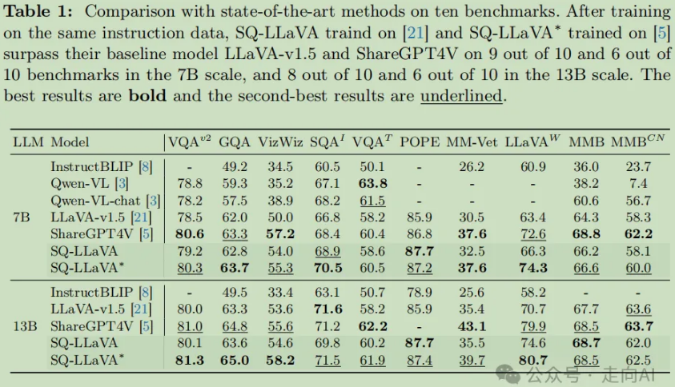
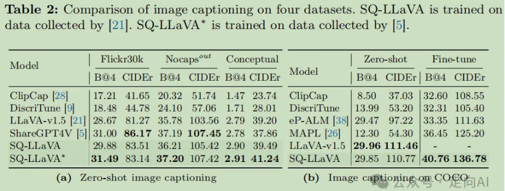

前言
以LLM为核心的多模态大模型工作LLaVA：通过在CLIP和Vicuna之间使用一个线性投射层连接的方式完成多模态聊天
- CLIP（Contrastive Language-Image Pre-Training）模型是一种多模态预训练神经网络
- 核心思想是使用大量图像和文本的配对数据进行预训练，以学习图像和文本之间的对齐关系。CLIP模型有两个模态，一个是文本模态，一个是视觉模态，包括两个主要部分：
- Text Encoder：用于将文本转换为低维向量表示-Embeding。
- Image Encoder：用于将图像转换为类似的向量表示-Embedding。
现有多模态大模型存在的问题：
- 现有的视觉指令数据主要基于对话，需要来自不同任务的图像和文本来生成多样化的问题
- 预训练的视觉编码器和语言模型之间的模态差异限制了双方的泛化能力和特征表示
为了克服这一挑战，已经有各种技术来对齐视觉和语言领域，大致可以分为三组：
- 构建更强大的图像特征提取器
- 收集更多高质量的训练数据
- 在预训练阶段同时完成微调视觉和语言模型
尽管能够取得较好的进展，但也不可避免的带来了更高的计算成本和更昂贵的数据收集，也可能需要复杂的手动设计以及繁重的注释工作。而且现有视觉指令数据集只捕捉到图像信息的一小部分，未能充分利用图像中丰富的信息，如颜色、上下文和对象间的关系。
针对以上问题，本文提出了一个新的思路：
- 提出视觉自我提问的新颖训练技术SQ-LLaVA，利用问题上下文增强视觉-语言对齐，无需新数据
- 实验结果显示SQ-LLaVA在视觉问答，视觉指令基准测试和零样本图像字幕生成等任务上性能超越了现有方法
通过训练LLM提出问题并发现视觉线索，而无需从其他来源收集额外数据。与仅关注答案预测的现有视觉指令调整方法不同，所提出的视觉自我提问旨在提取相关的问题上下文。
问题可能包含比答案更多的与图像相关的信息，这启发我们，将图像和相关问题对齐可能会进一步提高模型的视觉-语言理解能力。因此，当前视觉指令数据中的问题可以用于微调指令LLM，因为它们具有多样化的语义信息。
模型
视觉自我提问
- 利用现有的视觉指令数据：
将数据中的问题部分作为学习资源，训练LLM生成与图像相关的高质量问题。
- 设计自我提问的标记和输入格式
- 引入新标记
[vusr]，将提问定义为独立任务，而[usr]和[aswr]分别代表用户输入和助手回答。 - 通过随机变量R和阈值δ确定数据中“自我提问”对话的比例，确保问题多样性（例如不同类型的推理问题、多选问题）。
- 系统消息预设为“生成有帮助、详细且礼貌的回答，并提出与图像内容相关的复杂问题”。
- 多样化问题生成：SQ-LLaVA生成的问题被证明比GPT4-V更具有多样性（如推理、多选问题等），且问题内容更紧密关联于图像上下文。
模型架构改进
论文通过多模块协同优化，实现视觉与语言模态的深度对齐
SQ-LLaVA模型的四个主要部分
- 视觉编码器（CLIP-ViT）：
- 对输入图像进行嵌入提取，生成初始的视觉特征。
- 原型提取器（Prototype Extractor）：
- 在视觉嵌入中引入聚类机制，提取语义丰富的视觉“原型”信息，增强图像标记的表示能力。
- 使用基于软分配的聚类算法（EM步骤）更新原型中心，最终对图像标记进行加权聚合，捕捉语义一致性（如“狗”、“草地”等）。
- 可训练的投影块：
- 解决视觉和语言领域的维度不匹配问题，将增强后的视觉嵌入映射到语言标记空间。
- LLM骨干（Vicuna）：
- LLM对视觉和语言标记进行联合建模，预测问题或答案。
与传统的视觉-语言模型相比，SQ-LLaVA展示了许多高级能力。值得注意的是，SQ-LLaVA有效地减轻了对象幻觉问题，从而产生了更值得信赖的预测。此外，SQ-LLaVA能够在不需要人类文本指令的情况下生成关于给定图像的多样化和有意义的问题。如图5所示，生成的问题包括多项选择、推理、二元选择问题，每个问题的内容都与给定图像高度相关或具有挑战性，例如第三幅图像的“看向大海的男人的发色是什么？”和第二幅图像的“图片里有牛吗？”。这些例子突出了SQ-LLaVA产生多样化和高质量的问题的能力。
启发：问题可能包含比答案更多的与图像相关的信息，将图像和相关问题对齐可能会进一步提高模型的视觉-语言理解能力。而本文中提出的其他模块比如什么Prototype Extractor就是为了提高最终指标加进来凑数的创新点，训练也基本和LLaVA的两阶段一致，就是多了个self-question的loss，没有介绍的必要，有兴趣的可以去看原文，下面就直接看实验结果吧
实验


在表1的定量比较中，SQ-LLaVA在多个视觉指令调整任务上超越了现有模型。SQ-LLaVA-7B和SQ-LLaVA-13B在不同尺寸的数据集上均展现出优越性能，尤其在LLaVA（wild）基准测试中，SQ-LLaVA-7B实现了17.2%的性能提升，显示了模型在详细描述和复杂推理任务上的优势。此外，SQ-LLaVA-7B在ScienceQA上的表现证明了其在理解和推理科学内容方面的能力，以及有效处理多模态信息的潜力。在POPE基准测试中，SQ-LLaVA-7B相比基线模型LLaVA-v1.5-7B和ShareGPT4V-7B有稳定提升，显示出更高的可靠性和可信度。
总结
本文最有意义的观点：问题可能包含比答案更多的与图像相关的信息，将图像和相关问题对齐可能会进一步提高模型的视觉-语言理解能力。和上篇文章 ECCV2024 | Genixer：为多模态任务创建高质量视觉指令数据的新方法 通过利用现有QA数据对训练一个不依赖GPT4V来创建高质量视觉指令数据集的方法，有异曲同工之妙。
同样可以为后续研究提供了新思路，即训练一个能够输出视觉指令并且擅长提问的MLLM，在自动创建高质量视觉指令数据的过程中，输入一张图片和图片描述给模型，不仅能够得到各种类型的QA，而且提出的Question还必须得是一个好的、高质量的Question。